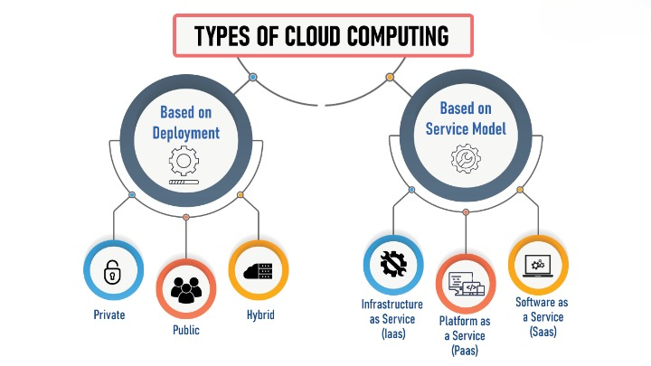

What is cloud computing ?
A beginner’s guide
What is cloud computing ?
A beginner’s guide
Cloud computing refers to the use of hosted services, such as data storage,
servers, databases, networking, and software over the internet. The data is stored on physical
servers, which are maintained by a cloud service provider. Computer system resources, especially
data storage and computing power, are available on-demand, without direct management by the user in
cloud computing.
Cloud computing plays a pivotal role in our everyday lives, whether accessing a cloud application
like Google Gmail, streaming a movie on Netflix or playing a cloud-hosted video game.
Cloud computing has also become indispensable in business settings, from small startups to global
enterprises. Its many business applications include enabling remote work by making data and
applications accessible from anywhere, creating the framework for seamless omnichannel customer
engagement and providing the vast computing power and other resources needed to take advantage of
cutting-edge technologies like generative AI and quantum computing.
A cloud services provider (CSP) manages cloud-based technology services hosted at a remote data
center and typically makes these resources available for a pay-as-you-go or monthly subscription
fee.
Instead of storing files on a storage device or hard drive, a user can save them on cloud, making it
possible to access the files from anywhere, as long as they have access to the web. The services
hosted on cloud can be broadly divided into infrastructure-as-a-service (IaaS),
platform-as-a-service (PaaS), and software-as-a-service (SaaS). Based on the deployment model, cloud
can also be classified as public, private, and hybrid cloud.
Further, cloud can be divided into two different layers, namely, front-end and back-end. The layer
with which users interact is called the
front-end layer. This layer enables a user to access the data that has been stored in cloud through
cloud computing software.
The layer made up of software and hardware, i.e., the computers, servers,
central servers, and databases, is the back-end layer. This layer is the primary component of cloud
and is entirely responsible for storing information securely. To ensure seamless connectivity
between devices linked via cloud computing, the central servers use a software called
middlewareOpens a new window that acts as a bridge between the database and applications.
Cloud computing can either be classified based on the deployment model or the type of service. Based on the specific deployment model, we can classify cloud as public, private, and hybrid cloud. At the same time, it can be classified as infrastructure-as-a-service (IaaS), platform-as-a-service (PaaS), and software-as-a-service (SaaS) based on the service the cloud model offers.

Private Cloud
In a private cloud, the computing services are offered over a private IT network for the dedicated
use of a single organization. Also termed internal, enterprise, or corporate cloud, a private cloud
is usually managed via internal resources and is not accessible to anyone outside the organization.
Private cloud computing provides all the benefits of a public cloud, such as self-service,
scalability, and elasticity, along with additional control, security, and customization.
Public Cloud
Public cloud refers to computing services offered by third-party providers over the internet. Unlike
private cloud, the services on public cloud are available to anyone who wants to use or purchase
them. These services could be free or sold on-demand, where users only have to pay per usage for the
CPU cycles, storage, or bandwidth they consume.
Hybrid Cloud
Hybrid cloud uses a combination of public and private cloud features. The “best of both worlds”
cloud model allows a shift of workloads between private and public clouds as the computing and cost
requirements change. When the demand for computing and processing fluctuates, hybrid cloudOpens a
new window allows businesses to scale their on-premises infrastructure up to the public cloud to
handle the overflow while ensuring that no third-party data centers have access to their data.
IaaS (Infrastructure-as-a-Service), PaaS (Platform-as-a-Service), SaaS (Software-as-a-Service) and serverless computing are the most common models of cloud services, and it’s not uncommon for an organization to use some combination of all four.


Compared to traditional on-premises IT that involves a company owning and maintaining physical data centers and servers to access computing power, data storage and other resources (and depending on the cloud services you select), cloud computing offers many benefits, including the following:
Cost-effectiveness
Cloud computing lets you offload some or all of the expense and effort of purchasing,
installing, configuring and managing mainframe computers and other on-premises
infrastructure. You pay only for cloud-based infrastructure and other computing resources as
you use them.
Increased speed and agility
With cloud computing, your organization can use enterprise applications in minutes instead
of waiting weeks or months for IT to respond to a request, purchase and configure supporting
hardware and install software. This feature empowers users—specifically DevOps and other
development teams—to help leverage cloud-based software and support infrastructure.
Enhanced strategic value
Cloud computing enables organizations to use various technologies and the most up-to-date
innovations to gain a competitive edge. For instance, in retail, banking and other
customer-facing industries, generative AI-powered virtual assistants deployed over the cloud
can deliver better customer response time and free up teams to focus on higher-level work.
The origins of cloud computing technology go back to the early 1960s when Dr. Joseph Carl Robnett
Licklider (link resides outside ibm.com), an American computer scientist and psychologist known as
the "father of cloud computing", introduced the earliest ideas of global networking in a series of
memos discussing an Intergalactic Computer Network. However, it wasn’t until the early 2000s that
modern cloud infrastructure for business emerged.
In 2002, Amazon Web Services started cloud-based storage and computing services. In 2006, it
introduced Elastic Compute Cloud (EC2), an offering that allowed users to rent virtual computers to
run their applications. That same year, Google introduced the Google Apps suite (now called Google
Workspace), a collection of SaaS productivity applications. In 2009, Microsoft started its first
SaaS application, Microsoft Office 2011. Today, Gartner predicts worldwide end-user spending on the
public cloud will total USD 679 billion and is projected to exceed USD 1 trillion in 2027 (link
resides outside ibm.com).
Frequently Asked Questions